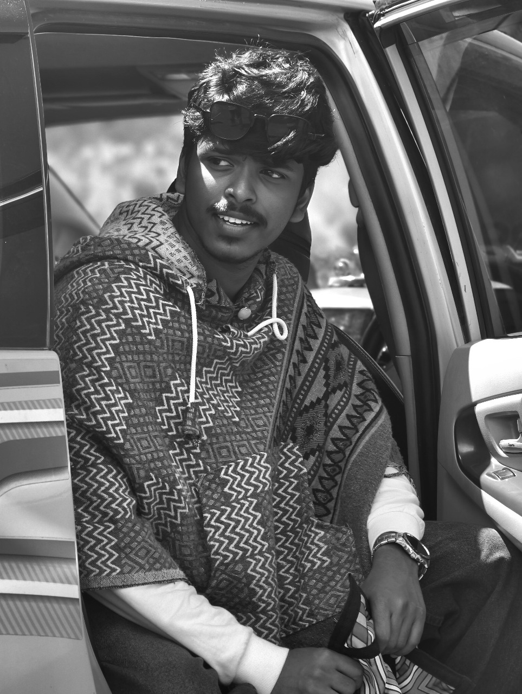

A passionate Cyber Forensic graduate who loves technology, problem-solving, and creating meaningful digital experiences.
Download Resume
ILM College of Arts and Science
2021 – 2024
Kendriya Vidyalaya NO:2 Kozhikode
2020 – 2021
Kendriya Vidyalaya NO:2 Kozhikode
2018 – 2019
An online platform that helps animal rescue and connects stakeholders for collaboration, using Django, HTML, JS, and SQL.
A global artist blog platform for showcasing artworks and interacting with other artists.